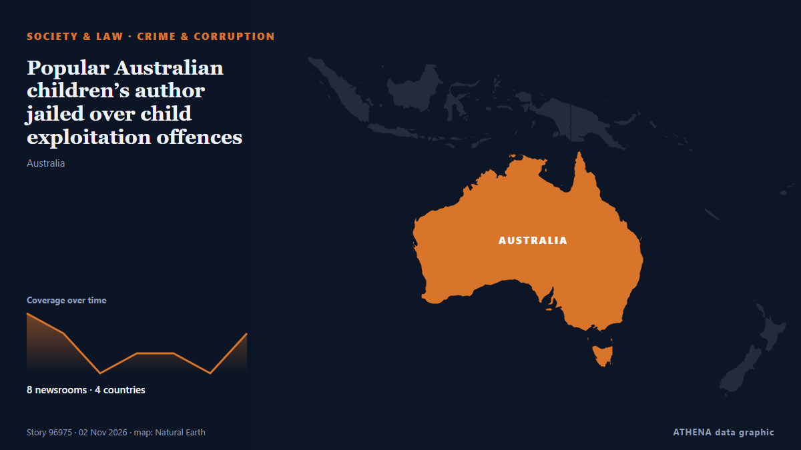

الجريمة والفساد
برعايةبرعاية  Cybernetics and Artificial Intelligence Lab Welcome to the Cybernetics and Artificial Intelligence Laboratory, established at the Department of Business Administration of the National
Cybernetics and Artificial Intelligence Lab Welcome to the Cybernetics and Artificial Intelligence Laboratory, established at the Department of Business Administration of the National
| 20 أكتوبر | 0 |
|---|---|
| 21 أكتوبر | 0 |
| 22 أكتوبر | 1 |
| 23 أكتوبر | 0 |
| 24 أكتوبر | 1 |
| 25 أكتوبر | 0 |
| 26 أكتوبر | 1 |
| 27 أكتوبر | 0 |
| 28 أكتوبر | 0 |
| 29 أكتوبر | 3 |
| 30 أكتوبر | 7 |
| 31 أكتوبر | 3 |
| 1 نوفمبر | 6 |
| 2 نوفمبر | 2 |
تُعرض العناوين بالإنجليزية كما نُشرت.

Popular Australian children’s author jailed over child exploitation offences
The author of Jasper Jones and Runt pleaded guilty in May after police raided his home months earlier. من BBC News
Boy, 14, hands himself in to police after Bradley Lowery used in sickening taunt in Coventry vs Sunderland
Bradley Lowery died aged six from neuroblastoma. من Manchester Evening News
Police with assault rifles begin Sydney patrols in wake of Bondi attack
SYDNEY: A new police unit armed with military assault rifles has begun patrolling the streets of Sydney, in an Australian-first measure set up in response to the Bondi Beach attack last December. من Business Recorder
Halloween shootings leave at least 24 dead and 94 wounded in the US
The shootings unfolded at nightclubs, costume stores, outside stadiums and near college campuses. من The Straits Times
Chinese Communist Party taps big data surveillance to combat corruption
A Central Committee resolution said the party would also combat corruption involving virtual currencies and blockchain. من Free Malaysia Today
Police probe Jeffrey Epstein’s time spent at Balmoral with Andrew Mountbatten-Windsor
Scottish police are investigating the time convicted sex offender Jeffrey Epstein spent with Andrew Mountbatten-Windsor at Balmoral, a private royal estate in Scotland which is a favored retreat for… من Egypt Independent
Najib yet to pay RM50mil fine for house arrest, says AG
Dusuki Mokhtar confirms that the former prime minister will remain in prison until the fine is settled. من Free Malaysia Today
Police arrest 11 over attack on Sowore in Ekiti
The police had dismissed reports that Sowore was kidnapped by armed men in the state capital, describing the incident as an altercation with some individuals at a restaurant around the Dalimore area… من Vanguard
Niece and uncle shot dead at Sakumono over alleged GH¢500,000 debt
The police have launched investigations into the killing of a 57-year-old man and his 47-year-old niece at the NTHC Estate, Sakumono, in the Greater Accra Region, following a reported dispute over a… من MyJoyOnline
8-month pregnant Bengal woman delivers stillborn after assault by 'BJP workers'
In Cooch Behar district, a woman named Priya Pal lost her baby after an assault on her husband. من Times of India
New York state police to take over sexual assault complaints at Cornell University
New York state police will take over future sexual assault investigations at Cornell University, Governor Kathy Hochul said… من BusinessWorld
Man, 39, charged with murder of man in Mallow
A 39-year old man has been charged with the murder of Paul O'Connor in Mallow almost a fortnight ago. من RTÉ News
New Zealand police seize 250 kg of cocaine
As a result of successful international police cooperation and the timely exchange of operational intelligence by the Public Security Bureau of the Ministry of Interior, 68 kilograms of cocaine were… من Republika (English)
Police tracking down suspects in shooting incident in Sitiawan
IPOH: Police are tracking down suspects involved in a shooting incident in which several shots were fired at a BMW in front of a house in Taman Hijau, Kampung Koh, near Sitiawan, yesterday. من New Straits Times
IGP Special Operations Team arrests 192 suspects in nationwide anti-crime operations
The Ghana Police Service's IGP Special Operations Team has arrested 192 suspects during a series of intelligence-led operations across parts of the country, recovering suspected narcotic drugs… من MyJoyOnline
El Salvador frees ex-President Saca after 10-year corruption sentence
SAN SALVADOR, Oct 29 - Elias Antonio \"Tony\" Saca, a former Salvadoran president imprisoned for corruption, was released on Thursday, his lawyer said, standing alongside the politician as they… من The Straits Times
Vietnamese-American Photographer and Oberlin Professor Pipo Nguyen-duy Found Dead at 64
Nguyen-duy was an internationally exhibited visual artist and recipient of the Guggenheim Fellowship in photography. من ARTnews
Plaka Explosion: Three Suspects Linked to 80 Police Cases
Three men arrested over the Plaka explosion that killed six people are linked to nearly 80 previous police cases, according to Greek reports. من Greek City Times
Accountant’s employee loses €6,000 in online scam
An employee for an accountant’s office in Paphos lost €6,000 when she received an email, appearing to be from a bank, asking her to update her personal details. من Cyprus Mail